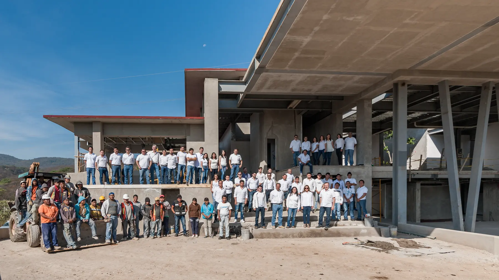

vila sol
Ver el proyecto
vila sol
Ver el proyecto
arquitectura residencial a tu medida
Diseñamos la casa que corresponde a tu forma de vivir: primero te escuchamos y después dibujamos. Del anteproyecto a la entrega, el despacho acompaña cada etapa contigo.
Portafolio
el trabajo del despacho
Casas, departamentos y espacios diseñados desde la vida de quien los habita. Entra a verlos con calma.


Obra destacada
una casa para empezar a mirar
Una casa entre encinos, ya construida y habitada. Recórrela con calma y mira el detalle: los materiales, la relación con el bosque, cómo entra la luz a lo largo del día.
Águila real
Residencia
Método
así trabajamos, paso a paso
-
01
empezamos por ti y por el sitio
Nos sentamos a entender cómo vives y vamos a ver el terreno. Con eso preparamos lo que el proyecto necesita y te presentamos un anteproyecto, que avanza cuando tú lo apruebas.
-
02
el proyecto completo, antes de construir
Desarrollamos el proyecto completo, con sus especialidades técnicas, y dejamos resueltos los permisos. Antes de construir tienes el proyecto, el presupuesto y el calendario.
-
03
la obra, el interiorismo y la entrega
Coordinamos la obra y el interiorismo con el mismo equipo que dibujó el proyecto. Recibes la casa terminada, probada y con toda su documentación.
Studio
el despacho detrás de cada casa
Un despacho fundado y dirigido desde 1997 por Jaime Lavín: arquitecto, diseñador de interiores y escultor, con estudios en México y en Italia. Conoce cómo piensa y por qué firma sus obras a mano.
Medalla de oro, XII Bienal Iberoamericana CIDI, 2023 a 2024

Registro
lo que respalda este trabajo
- XII Bienal Iberoamericana CIDI, medalla de oro 2023 a 2024
- IX Bienal Iberoamericana del CIDI, mención honorífica 2017
- México DESIGN, portada de la edición 72
- Columnista del diario Excélsior
- Mexicráneos, obra Nuestros Símbolos 2019
- Despacho en operación desde 1997
al final, una forma de vivir
Piensa en la hora de la tarde en que la luz entra donde debe, en la mesa donde recibes a tu gente querida. Eso es lo que se diseña aquí. Cuando quieras, empezamos por conocerte.
Agenda una primera conversación